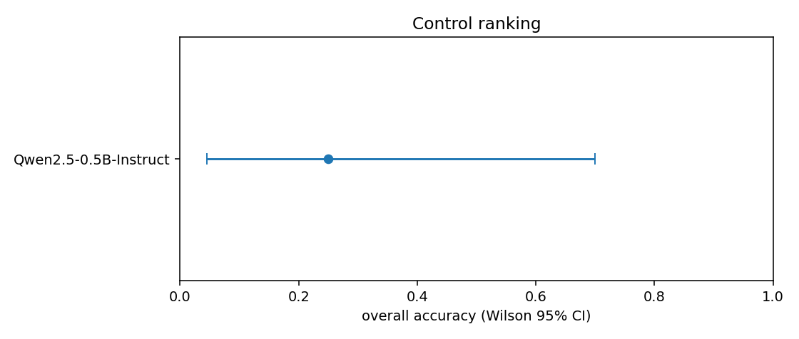
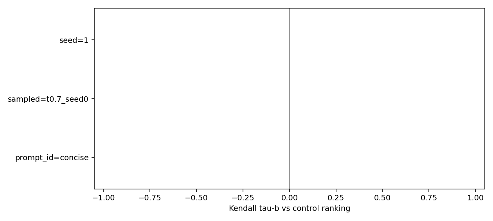
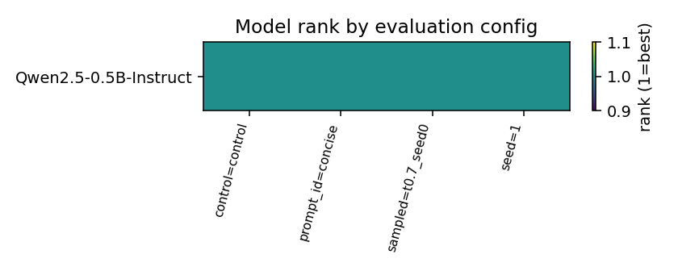

# Ranking stability report Generated from `results/registry.jsonl`. Numbers are generative exact-match, not lm-eval loglikelihood. Wilson 95% CIs. Rank flips whose CIs overlap are ties. Runs loaded: 4 ## Control ranking | rank | model | accuracy | 95% CI | |---|---|---|---| | 1.0 | `Qwen/Qwen2.5-0.5B-Instruct` | 0.25 | [0.0456, 0.6994] | ## Kendall tau vs control | factor | level | tau-b | rank reversals | n models | |---|---|---|---|---| | control | control | None | None | 1 | | prompt_id | concise | None | None | 1 | | sampled | t0.7_seed0 | None | None | 1 | | seed | 1 | None | None | 1 | ## McNemar vs control (same items) | model | factor | level | disagree | p | |---|---|---|---|---| | `Qwen/Qwen2.5-0.5B-Instruct` | prompt_id | concise | 0.25 | 1.0 | | `Qwen/Qwen2.5-0.5B-Instruct` | seed | 1 | 0.0 | 1.0 | | `Qwen/Qwen2.5-0.5B-Instruct` | sampled | t0.7_seed0 | 0.25 | 1.0 | ## CI-overlap ties (control) | model A | model B | point order | CI overlap (report as tie) | |---|---|---|---|


